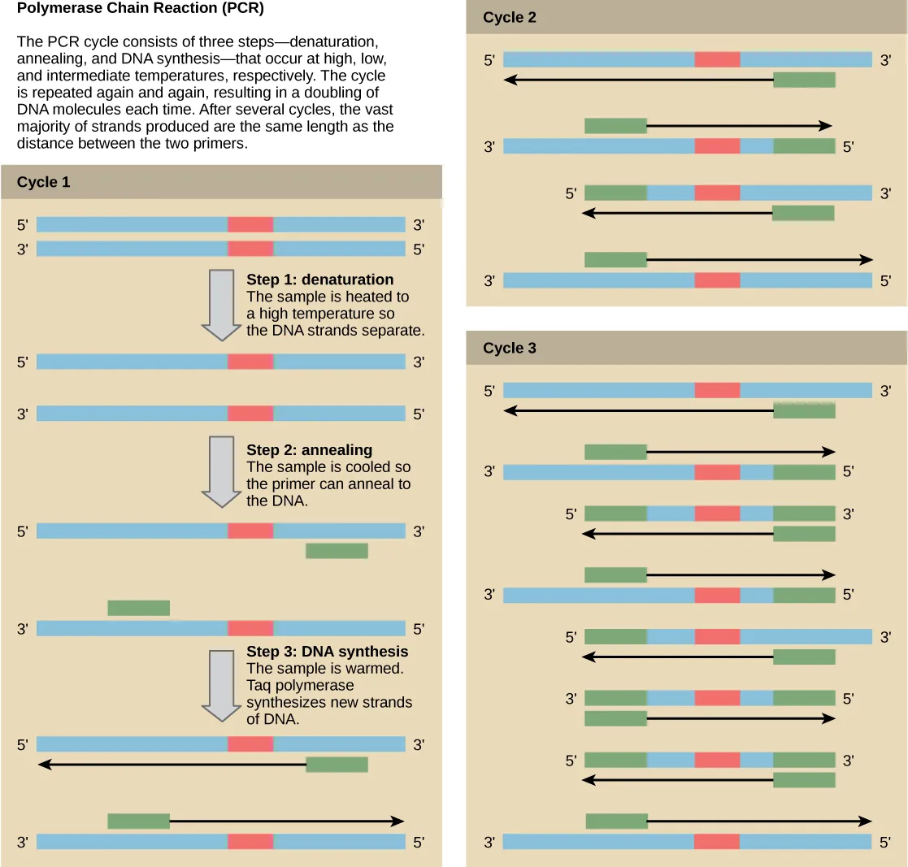
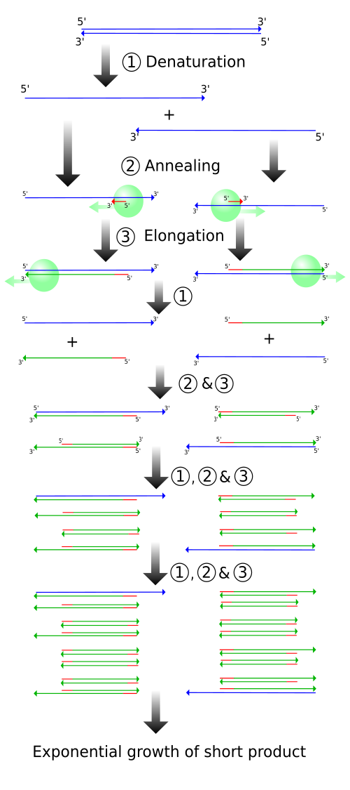
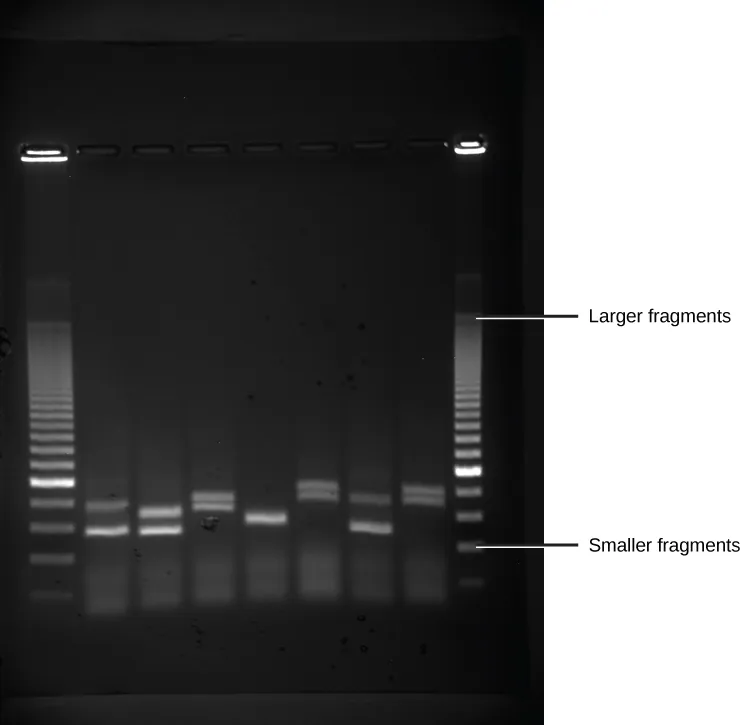
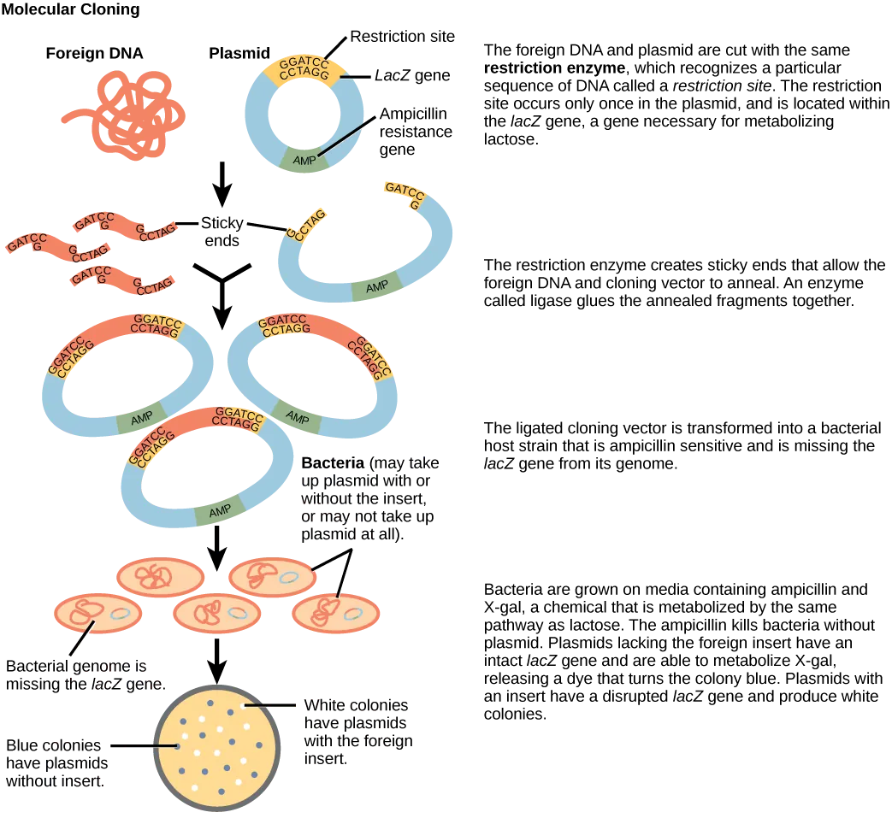

欣容的学习日记
2026.05.09
基因工程与
PCR
把一个晚上问过的问题，整理成可以反复看的图。

她卡住的问题
不把聊天原文放出来，只把学习问题整理成可复习的入口。
基因工程不会？先只抓 PCR、条带、载体。
PCR 为什么多带？多带通常是扩增错对象。
第 1、2、3 轮要剪吗？不剪，是边界逐轮清楚。
切开又连上干嘛？先造接口，再拼成重组 DNA。
Taq 酶干什么？从引物 3' 端延伸新链。
循环少为什么不选？它主要让条带变弱。
标记基因标什么？筛出带载体的细胞。
颜色不同代表啥？常是图示区分，不是机制改变。
01 · PCR
PCR 不是随便复制 DNA
PCR 的关键是“引物夹住哪一段”。引物贴得准，就主要扩目标片段；贴错相似位置，就可能出现非特异性条带。
题目常见说法
“只扩增目的基因” = 引物必须准确结合在目的基因两端。
“Taq 酶” = 负责从引物 3' 端延伸新链。
02 · 第几轮
没有剪，是边界被引物限定
第 1 轮和第 2 轮会出现长度还不完全固定的产物。到第 3 轮后，两端都被引物位置限定，标准长度目标片段开始稳定累积。
题目常见说法
“第 3 轮开始出现固定长度片段” = 两端都被引物限定。
“剪短”不是 PCR 机制，正确说法是边界限定。

03 · 条带
非特异性条带就是额外 DNA
电泳图里除了目标大小的条带，还出现额外条带，就说明反应中扩出了别的片段。最常见原因是引物特异性不够。
题目常见说法
“非特异性条带 / 杂带” = 引物可能贴错位置。
“循环少、模板少、Taq 弱” = 多影响产量，常表现为条带弱或无带。

04 · 表达载体
切开、装入、再筛选
限制酶负责“认位点、切 DNA”；DNA 连接酶负责“封接口”。所以不是切开又白连上，而是先做出能配对的接口，再把目的基因稳定接进载体。
1限制酶识别特定序列，把载体和目的基因切出兼容末端。
2末端配对相同或兼容切口能靠碱基互补先贴在一起。
3DNA 连接酶封住糖-磷酸骨架，形成稳定的重组 DNA。
题目常见说法
“限制酶切割” = 认特定序列并制造兼容接口，不是随便剪。
“连接酶连接” = 在已配对的接口处封 DNA 骨架，不负责选择目的基因。
“标记基因” = 筛选成功导入载体或重组载体的细胞；载体上可以设计一个或多个筛选标记。

题目里这样说，实际在考什么？
把术语翻译成答题判断。
非特异性条带 / 杂带引物可能贴错位置，扩增出目标外片段。
循环数少扩增产物少，是量的问题，不是多带首因。
模板量少目标条带弱或没有，不主要导致额外条带。
Taq 酶活性不足延伸效率低，产物少，不是杂带首因。
第 1、2、3 轮不发生剪切；只是产物两端逐轮被引物边界限定。
图中颜色不同多是为了区分模板、引物、新链或目标区，不表示碱基规则变了。
限制酶识别特定序列并切开 DNA，给载体和目的基因制造兼容接口。
DNA 连接酶在接口已配对后封住 DNA 骨架，形成稳定的重组 DNA。
标记基因筛出成功导入载体或重组载体的细胞，不是用来“标记目的基因序列”。
PCR 全知识点与题库
把三步循环、引物、Taq、产物轮次、条带判读、对照、RT-PCR、qPCR 和常见题目放到一页里。
图示来源
本页使用现成开放教育图，不使用手搓粗线条图。图片已下载到本地，减少外站请求和重复流量。
PCR、凝胶电泳、分子克隆图来自 OpenStax Biology 2e / Concepts of Biology，OpenStax 内容通常按 CC BY 4.0 授权发布。
PCR 轮次图来自 Wikimedia Commons：File:PCR.svg by Madprime，按 Wikimedia 页面列出的 CC BY-SA 3.0 / GFDL 条款使用。